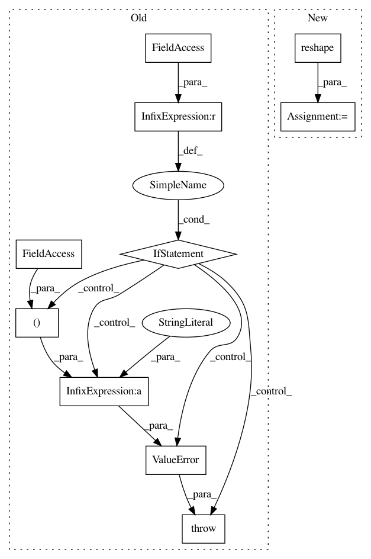

51a0c5fbe8e236cdb7e58afce66d7639d8fe9a45,tensorflow_transform/coders/example_proto_coder.py,_FixedLenFeatureHandler,__init__,#_FixedLenFeatureHandler#Any#Any#,122
Before Change
self._value_fn = _make_feature_value_fn(feature_spec.dtype)
self._shape = feature_spec.shape
self._rank = len(feature_spec.shape)
if self._rank > 0 and self._default_value:
raise ValueError("FixedLenFeature %r got default value for rank > 0, "
"only scalar default values are supported"
% (self._name,))
if isinstance(self._default_value, list):
raise ValueError("FixedLenFeature %r got non-scalar default value, "
"only scalar default values are supported" %
(self._name,))
After Change
raise ValueError(
"FixedLenFeature %r got default value with incorrect shape" %
(self._name,))
self._default_value = np.asarray(self._default_value).reshape(-1).tolist()
@property
def name(self):
The name of the feature.
In pattern: SUPERPATTERN
Frequency: 4
Non-data size: 10
Instances
Project Name: tensorflow/transform
Commit Name: 51a0c5fbe8e236cdb7e58afce66d7639d8fe9a45
Time: 2017-10-20
Author: tf-transform-dev@google.com
File Name: tensorflow_transform/coders/example_proto_coder.py
Class Name: _FixedLenFeatureHandler
Method Name: __init__
Project Name: RaRe-Technologies/gensim
Commit Name: af3357375250903ecb380051915e15ba721c42f4
Time: 2010-07-31
Author: radimrehurek@seznam.cz
File Name: src/gensim/similarities/docsim.py
Class Name: MatrixSimilarity
Method Name: getSimilarities
Project Name: RaRe-Technologies/gensim
Commit Name: e20d7b28bb811000edd0790fb72df9e68875a063
Time: 2010-07-31
Author: piskvorky@92d0401f-a546-4972-9173-107b360ed7e5
File Name: src/gensim/similarities/docsim.py
Class Name: MatrixSimilarity
Method Name: getSimilarities
Project Name: tensorflow/transform
Commit Name: 93c5a8952f5a350c78243bc1ffa47b07f5f93721
Time: 2017-11-22
Author: tf-transform-dev@google.com
File Name: tensorflow_transform/coders/example_proto_coder.py
Class Name: _FixedLenFeatureHandler
Method Name: __init__